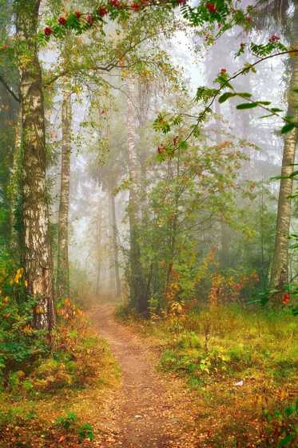
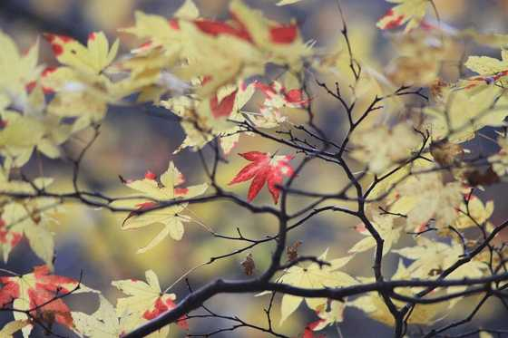
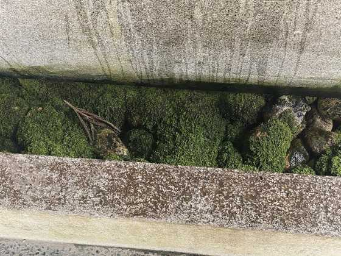
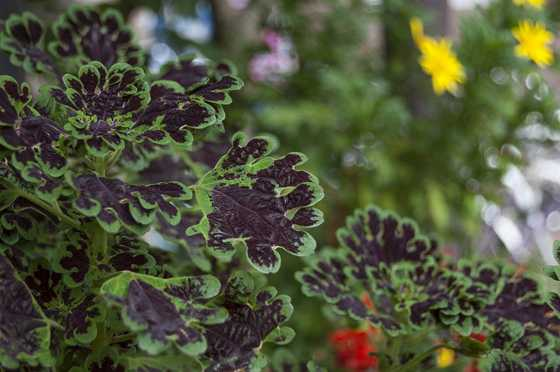

トレーラーハウスカフェ / 栃木県鹿沼市
トレイル ベリー
駅から歩いてすぐの空き地に、ふらりと立ち寄れる小さな一軒。道すがらの一杯と甘いひとときを。
新鹿沼駅から徒歩約3分 / 電話: 準備中

お店について
トレイル ベリーは、2025年11月8日に東武線「新鹿沼」駅から徒歩約3分の場所にオープンした、トレーラーハウスのカフェです。注文は窓口で受け付け、テイクアウトにも店内でのお食事にも対応しています。トレーラーの横にはログテラスがあり、カウンター席とテーブル席で過ごせます。
敷地の大半は駐車場で、車でも立ち寄りやすい造りです。近くの高校の学生さんにも気軽に利用してもらえるよう、価格を抑えめにしているとの紹介記事があります。
店名の意味や開店の経緯は確認できていません。更新情報はInstagramで案内されています。出典: 日光・鹿沼ゴーガイネット

メニュー
ドリンク、軽食、デザートなどが紹介されています。品目・価格・提供時間は準備中です。最新の内容はInstagramでご確認ください。


掲載写真はフリー素材のイメージで、店舗の実際の様子・商品ではありません。他地域で撮影されたものや撮影地が不明なものを含みます。
口コミ
ご来店の様子をイメージして制作側が作成した例です。実在のお客様の声ではありません。
電車を降りてすぐ寄れるのがうれしい。テラスで飲む一杯が、帰り道の楽しみになりそうです。
窓口で注文して、そのままテラス席へ。気取らない雰囲気で、ひとりでも入りやすそうです。
駐車場が広いので、車でのお出かけ途中にも立ち寄れそう。甘いものと飲み物のセットも気になります。
アクセス
- 所在地
- 〒322-0044 栃木県鹿沼市鳥居跡町1410-4
- 最寄り駅
- 東武線 新鹿沼駅から徒歩約3分
- 電話
- 準備中
- 営業時間
- 準備中
- 定休日
- 準備中
- @trail.berry




写真クレジット
写真は縮小・切り抜きなどの加工をしています。ライセンスは Creative Commons をご覧ください。
- latte-glass.jpg:「Coffee-latte」 Petr Kratochvil / CC0
- latte-art.jpg:「Cup of coffee with latte art 2016」 Abdulrohmatt / CC BY-SA 4.0
- pastry-plate.jpg:「Freshly baked pastries with coffee and cookies on a table」 Shixart1985 / CC BY 2.0
- apple-pie.jpg:「Apple pie 24」 Shisma / CC BY 4.0
- cake-plate.jpg:「Piece of chocolate cake on a white plate decorated with chocolate sauce」 Daria Yakovleva / CC0
- loaf-board.jpg:「Sourdough bread - January 2026 - Sarah Stierch 01」 Missvain / CC0
- loaves-rack.jpg:「Two loaves of rustic sourdough bread」 Nadav Spiegelman / CC BY-SA 4.0
- coffee-black.jpg:「Black Coffee with Cream and Sugar」 GuavaTrain / CC BY-SA 4.0
- cup-latte.jpg:「Caffè Latte at Sainsbury's Low Hall, Chingford, London 1」 Acabashi / CC BY-SA 4.0
- leaves-autumn.jpg:「Tatsuzawafudo Falls, Inawashiro, Fukushima Prefecture; October 2014 (01)」 Hetarllen Mumriken / CC BY-SA 2.0
- mist-forest.jpg:「Foggy autumn forest in the morning」 Sergey Pesterev / CC BY-SA 4.0
- moss-stone.jpg:「Oagata Shrine Chozuya moss」 Immanuelle / CC BY 4.0
- stream.jpg:「Mountain Stream - panoramio (1)」 Fumihiko Ueno / CC BY 3.0
- leaves-purple.jpg:「Variegated purple and green leaves in Yakushima, Japan 2015 (22937929169)」 jillllybean / CC BY-SA 2.0